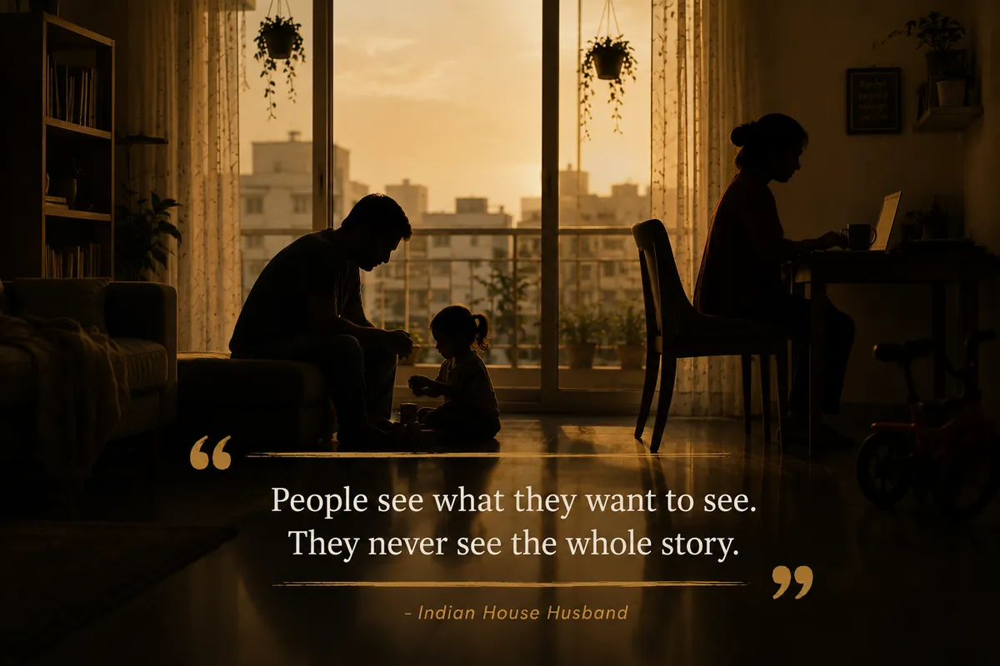
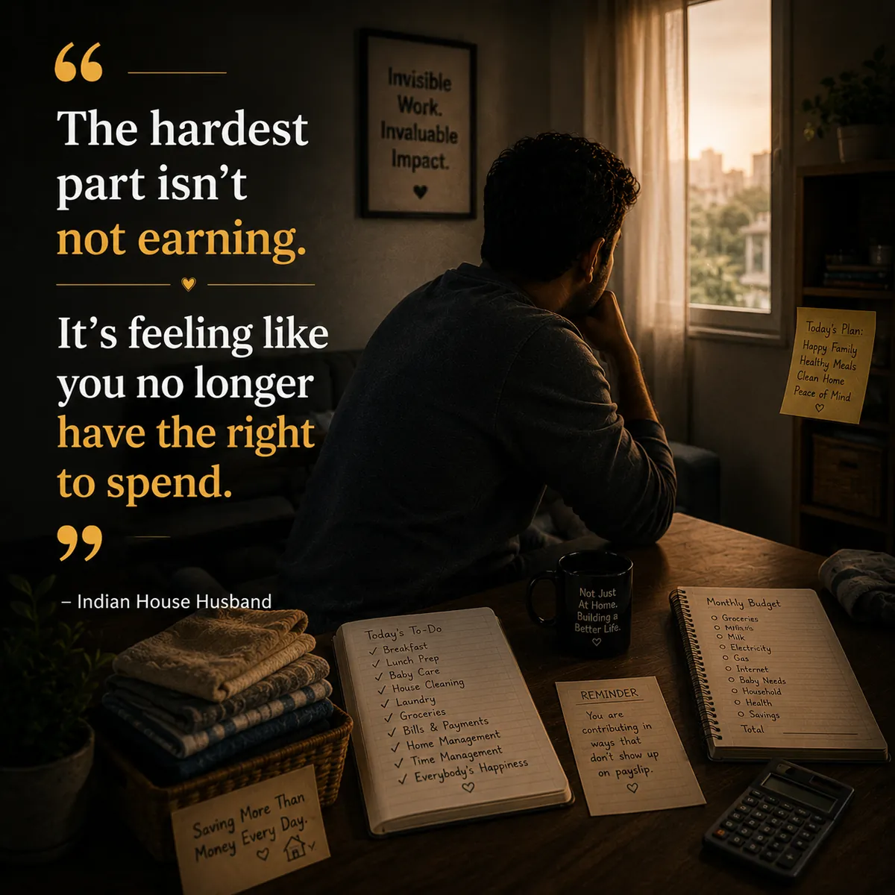
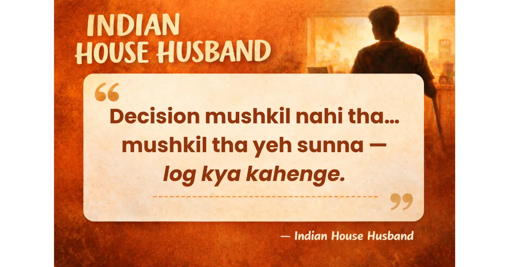

Indian House Husband I run a home.
Still figuring out how to say it out loud.
Personal essays on leaving a career to run a household — identity, marriage, parenting, and the quiet economics of a family of three. Written and read anonymously.
Indian House Husband is the story of a former software engineer in India who left his career to run the home and raise his daughter. Read the essays below, or follow along on Facebook, Medium and Substack.

New · Issue 01
The IHH Quarterly Journal
June to September 2026: our journey, sixteen weeks at a glance, six stories, a comic page and what we learned. Free to download.
Get the Journal (PDF)
Essays
Home Was Never a Place We Were Going to Stay Forever
One of the quieter advantages of a small town is how close everything actually is.
What It’s Really Like to Move Back to a Small Town After the Big City
Moving in with parents in a small town brought real support - and real judgment for a house husband and working wife challenging old roles.

When Society Mistakes Caregiving for Dependence
One sentence follows many men who step away from paid work to care for their families.

The Hardest Part Wasn't Leaving My Job. It Was Losing My Identity.
If you've read my previous pieces, you might think I'm completely comfortable in my new role. The truth is, I wasn't. At least not in the beginning.

"What Will People Say?" Was the Hardest Question We Faced
When we first started thinking about becoming parents, the biggest question wasn't how we would raise a child.